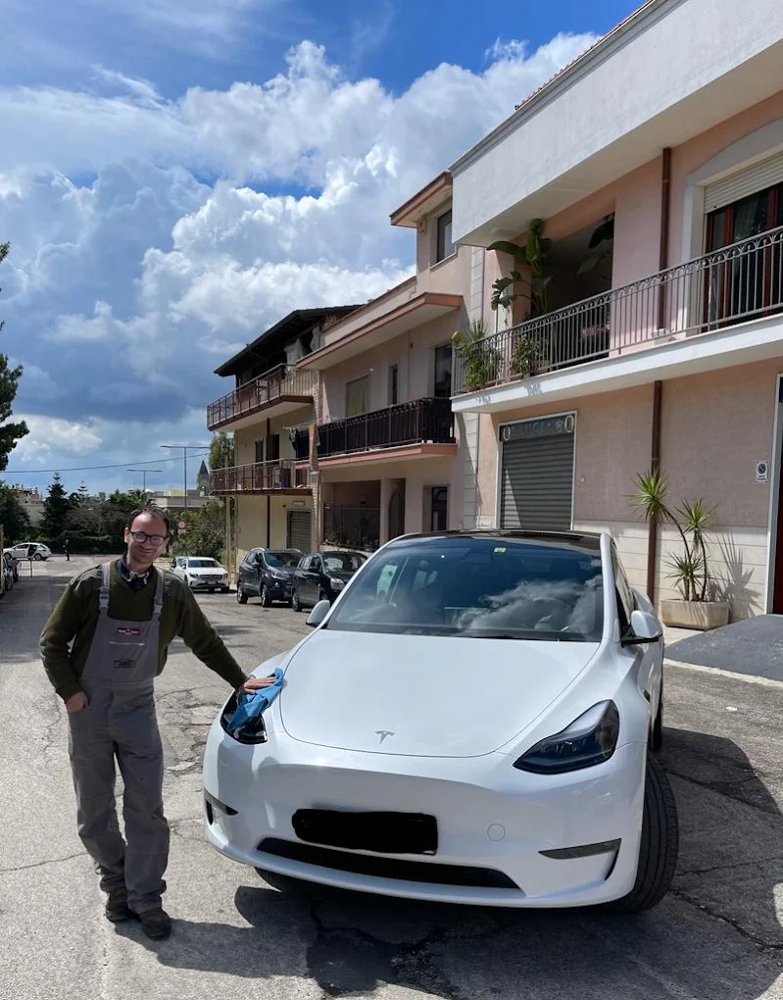
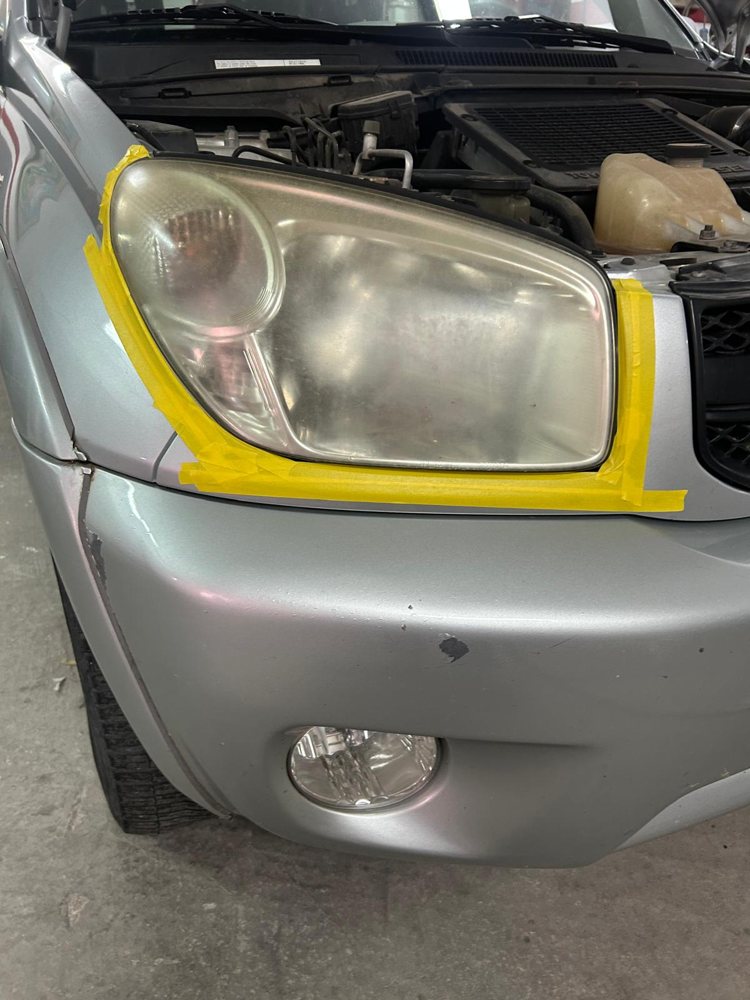
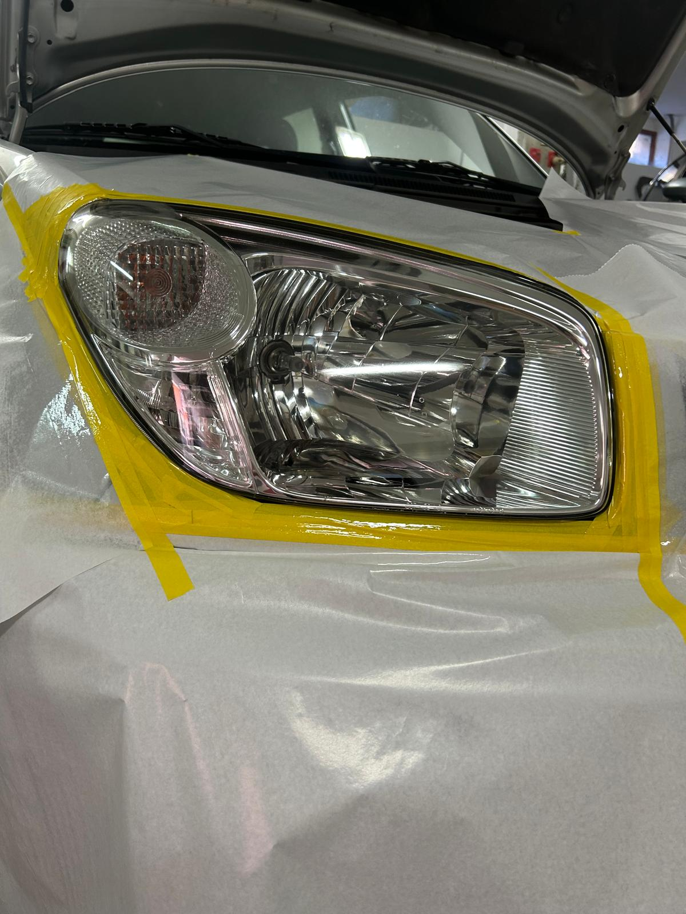
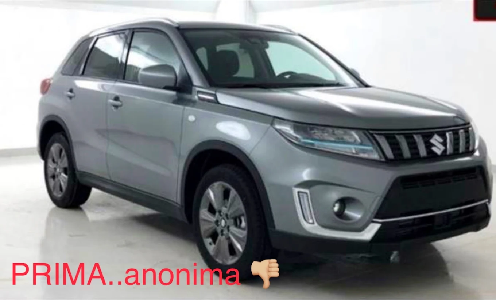
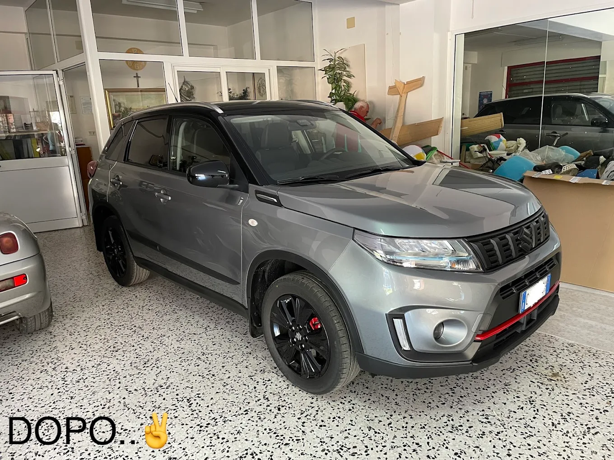

Carrozzeria · Verniciatura · Lucidatura
La fiducia si vede nei dettagli.
Da tre generazioni riportiamo la tua auto a nuovo, a Villa Castelli (BR). Onestà, precisione e cura artigianale dal 1976.
Chi siamo
Una storia di famiglia, dal 1976
L'Autocarrozzeria Barletta è una storica carrozzeria di Villa Castelli (BR). Nasce nel lontano 1976 e da sempre si è distinta per onestà e qualità del servizio.
Marco, Pasquale e Teodoro (figlio di Marco) dicono:
“Il rapporto di fiducia con il cliente è la cosa a cui teniamo di più. Ecco perché possiamo vantare clienti che vengono anche da fuori paese e che continuano a tornare da noi soddisfatti.”
Oggi la carrozzeria è tramandata e gestita interamente da Teodoro, che porta avanti la stessa cura artigianale di sempre.

Servizi
Cosa facciamo
Riparazione carrozzeria
Ripristino di lamiere, paraurti e componenti danneggiati, con la stessa cura di un lavoro fatto a mano.
Verniciatura
Verniciatura a regola d'arte, colore per colore, per un risultato indistinguibile dall'originale.
Lucidatura nanotecnologica
Trattamenti di lucidatura avanzata che proteggono la vernice e restituiscono brillantezza alla carrozzeria.
Lucidatura fari
Ripristino e lucidatura dei fari opacizzati, con una durata garantita di 5 anni.
Preventivi personalizzati
Un sopralluogo, un preventivo chiaro: nessuna sorpresa, solo lavoro fatto bene.
Ganci traino
Montaggio ganci traino con abilitazione e collaudo direttamente in sede.
Sostituzione parabrezza
Sostituzione di parabrezza e cristalli, anche tramite pratica assicurativa.
Gestione sinistri
Ti seguiamo in ogni fase della pratica con la tua assicurazione, senza pensieri.
Soccorso stradale 24h
Assistenza e recupero del veicolo, tutti i giorni, a qualsiasi ora.
Impianti e interni
Alzacristalli, specchietti retrovisori, sellerie e meccanismi interni: montaggio e riparazione di ogni componente, e non solo.
Galleria
Il lavoro parla da sé
Alcuni scatti e video dalla nostra officina. Presto ne aggiungeremo altri.




Recensioni
Quello che dicono i nostri clienti
“Servizio preciso e di prima qualità, cura dei dettagli verso i clienti.”
Ciro De Giorgio — Google
“Conosco il maestro artigiano e devo dire: bravo.”
Franco Corallo — Google
Contatti
Vieni a trovarci
- Indirizzo
Via Abruzzi, 16 — 72029 Villa Castelli (BR) - Telefono / WhatsApp
📞 333 250 2258 - Email
teodorobarletta@gmail.com - Orari
Lun–Ven: 8:00–13:00 / 15:00–19:00
Sab–Dom: chiuso
Lavoriamo con clienti da Villa Castelli e da tutta la Puglia: Francavilla Fontana, Grottaglie, Taranto, Brindisi, Ostuni, Martina Franca e oltre.